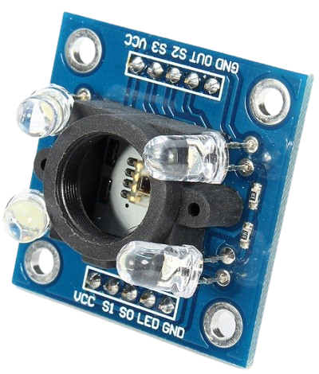
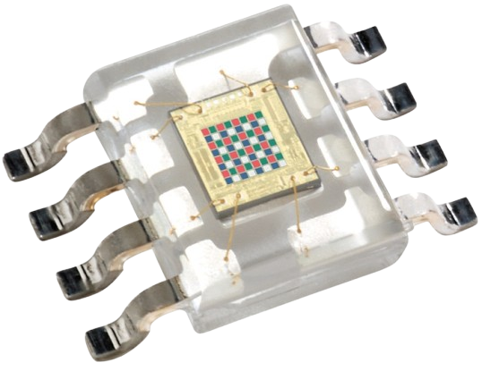
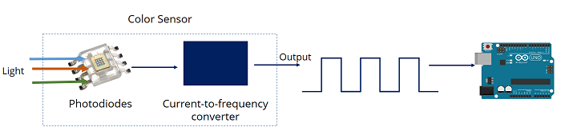

Introduction
The TCS3200 color sensor module – shown in the figure below – uses a TAOS TCS3200 RGB sensor chip to detect color. It also contains four white LEDs that light up the object in front of it.

Specifications
- Power: 2.7V to 5.5V
- Size: 28.4 x 28.4mm (1.12 x 1.12″)
- Interface: digital TTL
- High-resolution conversion of light intensity to frequency
- Programmable color and full-scale output frequency
- Communicates directly to microcontroller
Pinout
| Pin | Type | Description |
|---|---|---|
| VCC | Power | Power supply (5V) |
| GND | Power | Ground connection |
| S0, S1 | INPUT | Output frequency scaling selection inputs |
| S2, S3 | INPUT | Color filter selection inputs |
| OUT | OUTPUT | Frequency output signal |
| OE | INPUT | Enable for output frequency (active low) |

How the TCS3200 Sensor Works
At its core, the TCS3200 is a light-to-frequency converter.
The Photodiode Matrix
If you look closely at the center of the chip, you will see an 8 x 8 matrix of photodiodes. A photodiode converts light into electrical current. The 64 photodiodes are split into four different categories.

- 16 Photodiodes with Red filters (sensitive only to red light)
- 16 Photodiodes with Green filters (sensitive only to green light)
- 16 Photodiodes with Blue filters (sensitive only to blue light)
- 16 Photodiodes with Clear filters (no filter, sensitive to all visible light)
Light-to-Frequency Conversion
The sensor takes the current produced by these photodiodes and outputs a square wave (a digital signal that rapidly cycles between HIGH and LOW).
- The frequency of this square wave is directly proportional to the intensity of the light hitting the selected photodiodes.
- For example, if you shine a bright red light on the sensor, the "Red" photodiodes will produce a high-frequency square wave, while the Green and Blue photodiodes will produce a very low-frequency wave.

Controlling the Sensor via Pins (S0 to S3)
By using the Arduino's digital pins, you can dynamically tell the sensor which color filter to look at and how fast to scale the frequency output.
Frequency Scaling (S0, S1)
Frequency scaling allows you to optimize the output frequency for different microcontrollers. For an Arduino Uno/Nano, 20% scaling is usually perfect.
| Output frequency scaling | S0 | S1 |
|---|---|---|
| Power down | LOW | LOW |
| 2% | LOW | HIGH |
| 20% | HIGH | LOW |
| 100% | HIGH | HIGH |
Color Filter Selection (S2, S3)
By changing the states of S2 and S3, you choose which color matrix the OUT pin reads.
| Photodiode type | S2 | S3 |
|---|---|---|
| Red | LOW | LOW |
| Blue | LOW | HIGH |
| No filter (clear) | HIGH | LOW |
| Green | HIGH | HIGH |
Determine the Detected Color
The Arduino reads the frequency output from the sensor for the red, green, and blue filters. These values are then used to determine the color.
Using the Sensor with Arduino
Wiring TCS3200 to Arduino

| TCS3200 Pin | Arduino Uno Pin |
|---|---|
| VCC | 5V |
| GND | GND |
| S0 | D4 |
| S1 | D5 |
| S2 | D6 |
| S3 | D7 |
| OUT | D8 |
Arduino Script
This script configures the control pins, switches rapidly between the Red, Green, and Blue filters, and measures the duration of the incoming pulse using pulseIn().
Note on pulseIn(): A higher intensity of light results in a higher frequency, which means the duration of the pulse is shorter. Therefore, lower raw numbers in the Serial Monitor mean a stronger presence of that specific color.
// Define Sensor Pin Connections
#define S0 4
#define S1 5
#define S2 6
#define S3 7
#define sensorOut 8
// Variables to store raw photodiode pulse durations
int redFrequency = 0;
int greenFrequency = 0;
int blueFrequency = 0;
void setup() {
// Set Pin Modes
pinMode(S0, OUTPUT);
pinMode(S1, OUTPUT);
pinMode(S2, OUTPUT);
pinMode(S3, OUTPUT);
pinMode(sensorOut, INPUT);
// Set Frequency Scaling to 20% (S0 = HIGH, S1 = LOW)
digitalWrite(S0, HIGH);
digitalWrite(S1, LOW);
// Initialize Serial Communication
Serial.begin(9600);
Serial.println("TCS3200 Color Sensor Initialized...");
}
void loop() {
// 1. Read Red Photiodiodes
digitalWrite(S2, LOW);
digitalWrite(S3, LOW);
redFrequency = pulseIn(sensorOut, LOW);
// 2. Read Green Photiodiodes
digitalWrite(S2, HIGH);
digitalWrite(S3, HIGH);
greenFrequency = pulseIn(sensorOut, LOW);
// 3. Read Blue Photiodiodes
digitalWrite(S2, LOW);
digitalWrite(S3, HIGH);
blueFrequency = pulseIn(sensorOut, LOW);
// Print Raw values to Serial Monitor
Serial.print("R = ");
Serial.print(redFrequency);
Serial.print(" | G = ");
Serial.print(greenFrequency);
Serial.print(" | B = ");
Serial.println(blueFrequency);
delay(500); // Wait half a second between readings
}
Calibration and Mapping to True RGB (0-255)
The code above prints raw pulse widths, not standard 0–255 RGB values. Because ambient lighting conditions heavily affect this sensor, you must calibrate it manually for precision projects.
How to Calibrate:
- Open your Serial Monitor with the code running above.
- Hold a pure white object (like white paper) directly in front of the sensor. Note down the R, G, and B values. These are your Minimum values (highest light intensity).
- Hold a pure black object in front of the sensor. Note down the R, G, and B values. These are your Maximum values (lowest light intensity).
- Use the Arduino map() function to convert those custom ranges into a standard 0 to 255 format.
Example Calibration Snippet:
Replace the print statements in your loop with a mapping function like this (replace the placeholder numbers with your actual observed numbers)
// Map raw values to 0-255 range
int redMapped = map(redFrequency, 1000, 200, 0, 255); // Example min/max values
int greenMapped = map(greenFrequency, 1000, 200, 0, 255);
int blueMapped = map(blueFrequency, 1000, 200, 0, 255);
// Print Mapped RGB Values
Serial.print("Mapped R = ");
Serial.print(redMapped);
Serial.print(" | Mapped G = ");
Serial.print(greenMapped);
Serial.print(" | Mapped B = ");
Serial.println(blueMapped);
Summary
The TCS3200 color sensor is an RGB color detection module that identifies the color of an object by measuring the intensity of red, green, and blue (RGB) light reflected from its surface. It uses the TCS3200 sensor chip and four built-in white LEDs to illuminate the target object. The sensor converts the detected light intensity into a digital frequency signal, which can be read by a microcontroller such as an Arduino for accurate color recognition.